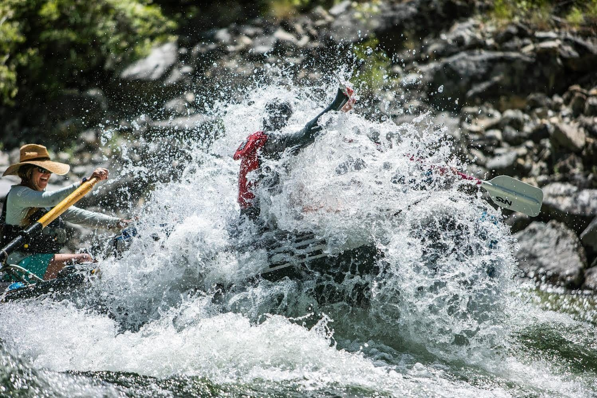
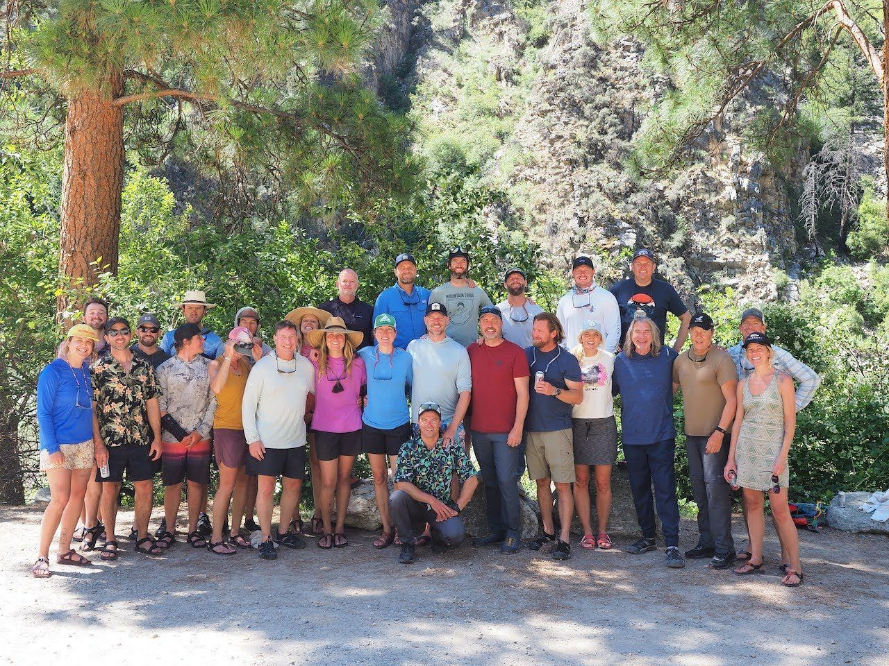

Two weeks ago I was getting towards the end of a 100-mile rafting trip in the Idaho wilderness when I made a small mistake that almost cost me my life. Our small group of adventurers were aboard a flotilla of 18 foot rafts and three small inflatable kayaks. We were having an amazing time admiring the pristine wilderness at the river's steady rate of 4 miles per hour. I was in one of the kayaks playing around in the white water when hit a wave in the wrong way and got sucked under water and held down.
The whole story is in this week's video. Suffice it to say: you're getting this email, so I didn't actually die, but the situation was a lot closer than anyone was comfortable with.
I had a few things going for me, of course: years of training in ice-water and in breathwork helped me keep a level head while I got cycled through a hydraulic (a sort of horizontal whirlpool) over and over again. I bided my time for around a minute--a minute involuntarily under water feels like a lot more than just a minute--when an unexpected opportunity to save myself appeared out of the watery aether. I don't want to spoil the video for you. But I got a real world lesson in survival, grit and flow that I imagine I will be writing about again down the line.

Aside from almost drowning, Laura and I had the time of our life.
But that wasn't my only take away from my week isolated in nature and astonishing beauty. It also just so happens that my birthday was this last weekend and on the occasion of my near death, and the realization that I only have so much time left on earth, I had a few intentions that I'd like to put out into the world.
First - In my early years I learned a lot of meditation and breath work which I honestly thought was common knowledge—but now realize is something I can pass on to others. Maybe I’d like to start a group in Denver where I could do some of that. Anyone interested?
Second - interacting with people face to face is a million times more fulfilling than through social media. The measure of success isn’t the number of interactions, it’s the depth of those relationships. I want to focus on meeting people in real life more.
Third - I’ve been fortunate enough to get to a comfortable financial place in my life. I’m not rich, but I have enough so that I can pick and choose what jobs I take on. I want to remember that having “enough” is so much more meaningful than wanting just “a little bit more”.
Fourth - Don’t sweat the small things. It’s easy to get caught up on details that aren’t working out right when the big picture is still on track. Thinking big is better than thinking small.
Thanks for reading.

Thanks so much to everyone at Boundary Expeditions and my fellow rafting adventurers who made this one of the most memorable trips of my life. I can't wait to see you all again.